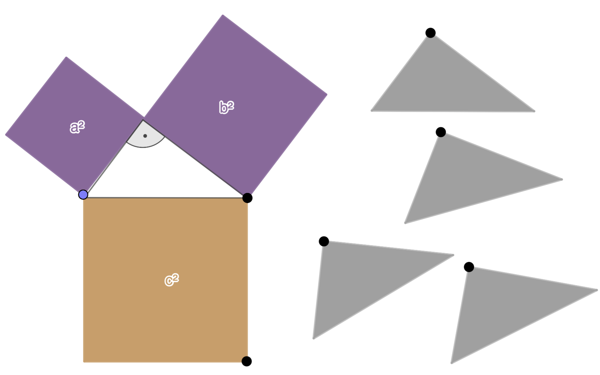

Aufgabe 8.3
Ergänzen Sie einmal das grosse blaue Quadrat und einmal die zwei
kleinen roten Quadrate durch die vier Dreiecke, so dass zwei
identische Figuren entstehen und erklären Sie, warum sich daraus der Satz von Pythagoras herleiten lässt

- Beide Anordnungen ergeben dasselbe grosse Quadrat
- Die vier Dreiecke sind in beiden Fällen identisch
- Was bleibt übrig, wenn man die Dreiecke wegnimmt?
- Vergleichen Sie die Restflächen
Der klassische Ergänzungsbeweis des Satzes von Pythagoras
Dieser Beweis wird ausführlich im Video und Skript behandelt. Die Grundidee:
Zwei Anordnungen - gleiche Fläche:
- Links: Vier Dreiecke + grosses blaues Quadrat ($c^2$)
- Rechts: Vier Dreiecke + zwei kleine rote Quadrate ($a^2 + b^2$)
Da beide Anordnungen das gleiche grosse Quadrat ergeben und die vier Dreiecke identisch sind, muss gelten: $c^2 = a^2 + b^2$. Dafür ist insbesondere zu zeigen, dass in beiden Fällen die Hinzunahme der 4 Dreiecke zu einem Quadrate mit Seitenlänge $a+b$ führt. Dies ist jeweils sorgfältig auch mit den entsprechenden Winkeln zu argumentieren (siehe Erklärung im Skript und Video).
Im Video: Etappe 2 · Ergänzungsbeweis bei 2:29